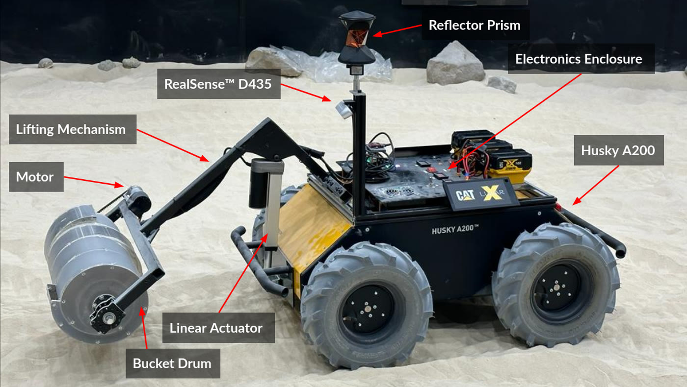

The problem
At one sixth of Earth gravity, reaction force is the binding constraint: an excavator that digs in discrete bites can push itself off the ground, so the tool has to stay engaged and shave. That propagates into the planning. Each pass changes the terrain the next one starts from, driving between sites is the dominant cost, and point turns carve grooves that make the worksite untraversable later. The naive search over dig orderings has (2·D·N + E)! states, and nobody is teleoperating this in real time.
What I built

- A full autonomous excavation stack on ROS 2, on a Clearpath Husky A200 skid-steer base with a custom bucket drum tool that excavates in one rotation direction and dumps in reverse, on a linear mechanism that lifts it 0.5 m to deposit the berm.
- Continuous excavation instead of discrete bites: the tool stays engaged and shaves material through the pass, holding ground reaction forces low throughout rather than spiking at each bite.
- Localization fusing wheel encoders, IMU, ground-facing visual odometry for slip, and beacons; dual RGBD cameras for ground-plane fitting and berm profile estimation, updating the worksite map at 1 Hz.
- Dig sequencing came from a separate planner built for 16-782, which searches over excavation and deposition order to minimize rover travel. Write-up: Planning for berm construction.
±2 cm
The final validation demonstration built a 15 cm by 76 cm berm end to end with zero manual interventions, within 2.1 cm of the target height and 1.3 cm of the target length, moving 8 kg of simulant per excavation cycle against a 3 kg requirement. Presented at the NASA Lunar Surface Innovation Consortium.
What worked
- The heuristic is what made the planner exist. With no heuristic, the top-level search produced no plan at all in 10 minutes on a 16-section berm. Relaxing to a collision-free 2D TSP and solving it with OR-Tools cut that to 70 s at optimal weight, and 27 s at weight 5 for 1.3% higher plan cost.
- Banning point turns is a planning decision, not a control one. The base is differential drive and can rotate in place perfectly well. The reason not to is that spinning in loose simulant digs a groove that strands you later, so the constraint belongs in the path planner as a minimum turn radius, not in the controller as a preference.
- Localization came in at 2 cm against a 30 cm requirement. That margin is what the berm shaping fed on: the height tolerance actually achieved was 2.1 cm.
What didn't
- The whole demonstration ran in Earth gravity on a simulant testbed. The low-reaction-force case for continuous excavation is a design rationale carried over from the lunar setting, not something the testbed measured.
- The capstone ran a simplified version of the sequencing planner. The full bilevel search with the TSP heuristic was evaluated separately in simulation, on berms of up to 16 sections.